| 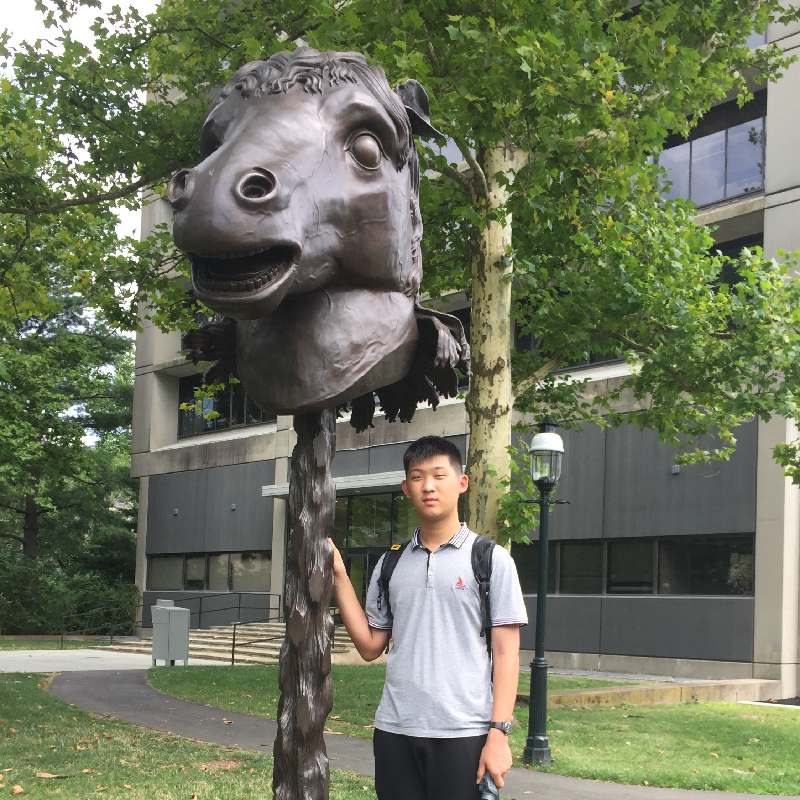 |
I am a PhD student in Mechanical Engineering at the University of Hong Kong, starting in September 2024. I received my B.Eng. in Automation from the Harbin Institute of Technology (Shenzhen) in June 2023. My research focuses on learning-based motion planning for mobile robots at the MaRS Lab, supervised by Prof. Fu Zhang. Previously, I worked as an undergraduate research assistant at the Networked Robotics and Systems Lab (nROS-Lab) (July 2023 – June 2024), under Prof. Haoyao Chen, and at the AI & ROBOT Lab, Tsinghua University (August 2021 – June 2023), under Prof. Xueqian Wang. My research interests lie in autonomous navigation for mobile robots, with a strong focus on exploring learning-based approaches to perception and decision-making in complex and dynamic environments. I am dedicated to developing intelligent and efficient robotic systems capable of addressing real-world challenges in cluttered and unpredictable environments. CV / Google Scholar / GitHub / Bilibili |
|
My current research topics include motion planning of service robots and field robots, focusing on enhancing the autonomy of mobile robots in complex environments. |
|
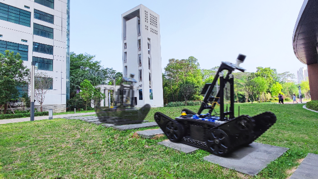
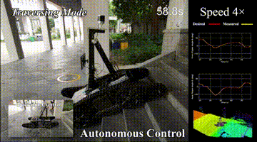
|
Zhengzhe Xu*, Yanbo Chen*, Zhuozhu Jian, Junbo Tan, Xueqian Wang, Bin Liang IEEE Robotics and Automation Letters (RA-L) IEEE Xplore / arXiv / Video |
|
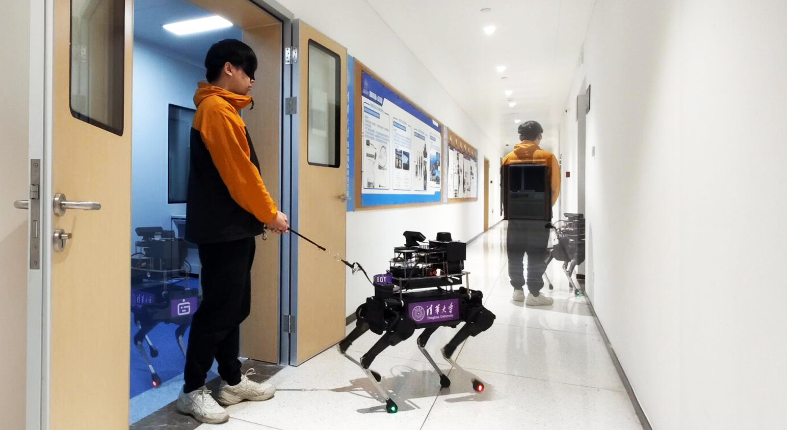
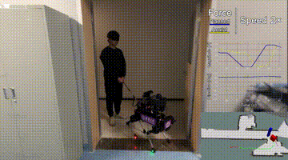
|
Yanbo Chen*, Zhengzhe Xu*, Zhuozhu Jian*, Gengpan Tang, Liyunong Yang, Anxing Xiao, Xueqian Wang, Bin Liang IEEE International Conference on Robotics and Automation (ICRA), 2023 IEEE Xplore / arXiv / Video |
|
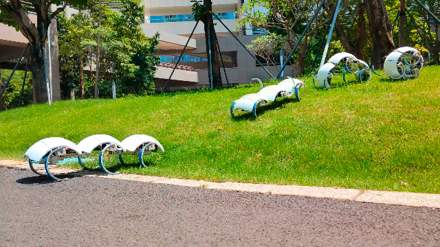
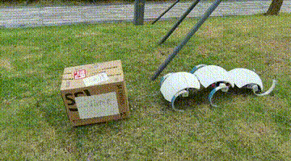
|
The 10th National College Student Mechanical Innovation Design Competition Keywords: Reconfigurable Robot, Hexapod Bionic Robot, Gait Control, Mechanical Design Designed a reconfigurable hexapod robot with C-legs, taking inspiration from the behavior of pill bugs that can curl up into balls. The robot consists of three partial spherical shells, which are connected by hinges to achieve “linear-spherical" reconfiguration, facilitating rolling and crawling motion modes. Used brushless DC motors connected via CAN bus to control the robot’s motion for diverse gait control |
|
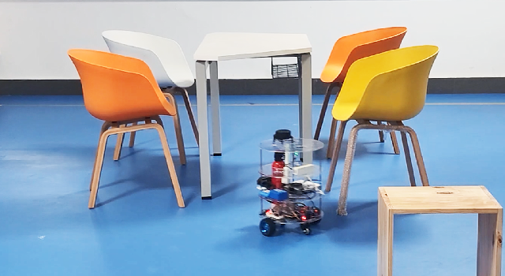
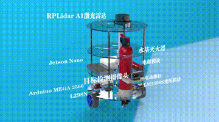
|
The 4th China University Intelligent Robot Creative Competition Keywords: Image Recognition, Service Robot, Mechanical Design Designed and built a two-wheeled differential robot platform based on ROS. The YOLOv5 image recognition module was deployed on the Jetson Nano for flame detection by camera and fire extinguisher injection by an actuator mechanism. Proposed a scheme for global and local camera flame detection to provide more reliable safety for the home. |
|
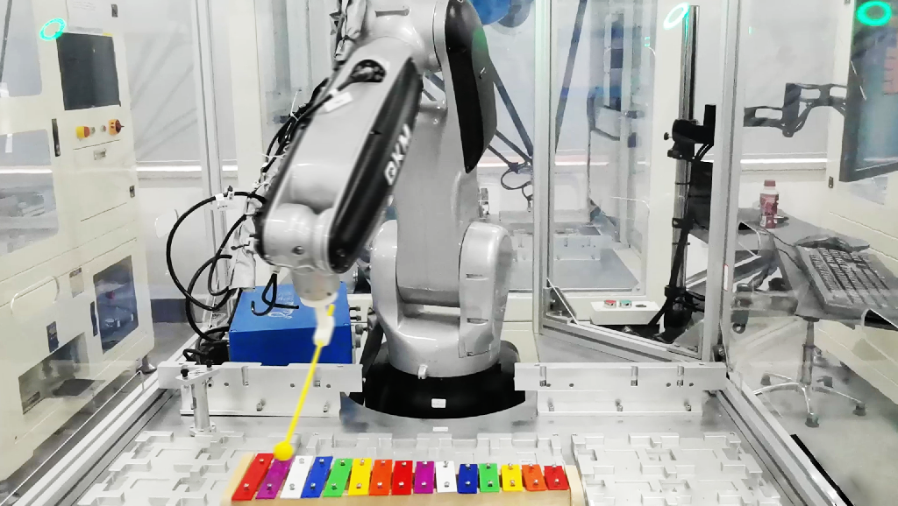

|
Course Project of HIT AUTO3005: Robotics Keywords: Robotic Arm, Inverse Kinematics, Trajectory Planning Utilized a six-axis robotic arm to play melodious tunes on the xylophone. Cartesian space paths are generated from musical scores, Hermite interpolation is used for trajectory planning, and then trajectories of six joints are obtained by inverse kinematics. A demonstration video is available at YouTube, and the code is open-sourced on GitHub. |
|
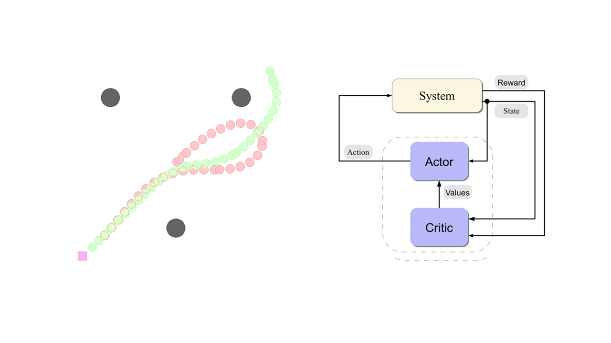
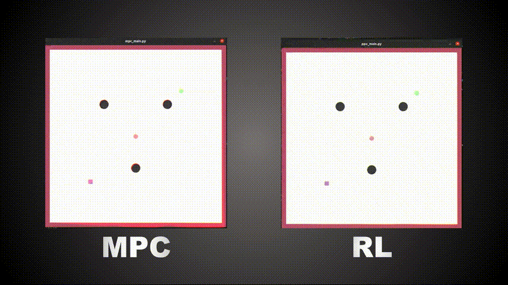
|
Course Project of HIT AUTO3019: Machine Learning Keywords: Reinforcement Learning, Proximal Policy Optimization, Actor-Critic Network, Model Predictive Control Designed an Actor-Critic network to train an agent to escape from a hunter and avoid obstacles. Proximal Policy Optimization (PPO) was employed for training the network, and a baseline algorithm using model predictive control (MPC) was also implemented. The source code is available on GitHub. |
National Scholarship |
Ministry of Education of the People's Republic of China 2021, 2023 |
TOPBAND Intelligent Technology Excellence Scholarship |
Shenzhen Topband Co., Ltd 2022 |
First-Class Academic Scholarship |
Harbin Institute of Technology, Shenzhen 2021, 2022, 2023 |
|
Modified version of template from here Last updated: 22 Nov. 2024 |